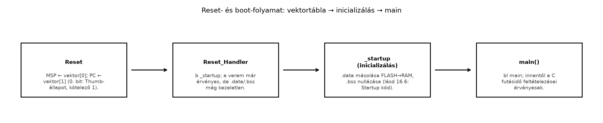

Egy új Cortex-M3 alapú panel bring-upja során a fejlesztő lefordítja
a main()-t, letölti a lapra, és semmi nem történik: nincs
soros kimenet, a debugger nem áll meg a main első során,
néha a mag HardFault-ba kerül. A leggyakoribb gyökér nem a C-kódban,
hanem a címtér legelső nyolc bájtjában van. A Cortex-M mag reset után
nem egy fix, architektúrába égetett címről kezd
utasítást végrehajtani, hanem a 0x00000000-tól induló
vektortáblából olvassa ki a kezdeti veremmutatót és a
reset-handler címét. Ha ez a nyolc bájt hibás, a processzor vagy rossz
veremmel indul, vagy a rossz címre ugrik, és minden további kód
irreleváns.
Ez az alfejezet a boot-folyamat első, hardveresen definiált
szerződését építi fel: hogyan néz ki a minimális vektortábla, hogyan
kerül a flash elejére linker scripttel, mit tesz a reset-handler a
.data/.bss kezelése előtt, és
hogyan ellenőrizhető mindez objdump-pal. A
.data másolása és a .bss törlése a startup kód témája; itt csak a belépési pontig
jutunk el.
Vektortábla (vector table): a címtér elején elhelyezkedő, 4 bájtos szavak rendezett listája, amely a processzor kivétel- és megszakításkezelőinek belépési címeit tartalmazza. Armv7-M esetén az első szó nem ugrási cím, hanem a kezdeti veremmutató (initial stack pointer) értéke. A tábla első 16 bejegyzése fix sorrendű rendszerkivétel, ezután következnek az NVIC által kezelt külső megszakítások (IRQ0, IRQ1, …).
A reset-szekvencia hardveresen, utasítás végrehajtása nélkül történik:
| Lépés | Művelet | Forrás |
|---|---|---|
| 1 | SP ← mem[0x00000000] |
vektortábla 0. szava |
| 2 | PC ← mem[0x00000004] (bit0 = Thumb jelző) |
vektortábla 1. szava |
| 3 | LR ← 0xFFFFFFFF |
visszatérési cím hiányát jelzi |
A 0xFFFFFFFF azért fontos, mert a reset-handlerből
nincs értelmes visszatérés: nincs hívó, aki
visszavárna. Ha a handler BX LR-rel próbál visszatérni, a
mag 0xFFFFFFFE-re ugrik, és HardFault lesz belőle. Ezért a
reset-handler vagy egy startup rutinra adja tovább a vezérlést, vagy
végtelen ciklusba kerül.
A 16 rendszerkivétel-bejegyzés sorrendje Armv7-M-en kötelező:
| Offset | Bejegyzés | Megjegyzés |
|---|---|---|
| 0x00 | Initial SP | nem kód, hanem adat |
| 0x04 | Reset | ide ugrik a mag reset után |
| 0x08 | NMI | nem maszkolható megszakítás |
| 0x0C | HardFault | minden nem kezelt fault ide fut |
| 0x10 | MemManage | MPU-sértés |
| 0x14 | BusFault | buszhiba |
| 0x18 | UsageFault | érvénytelen utasítás / állapot |
| 0x1C–0x28 | Reserved | négy szó, 0-val kitöltve |
| 0x2C | SVCall | supervisor call |
| 0x30 | DebugMonitor | debug kivétel |
| 0x34 | Reserved | egy szó |
| 0x38 | PendSV | függőbe tehető szolgáltatáskérés (kontextusváltáshoz) |
| 0x3C | SysTick | rendszer-tick |
Két különböző eset van, és külön kezeljük őket. A fenntartott
(reserved) bejegyzések (a 7–10. és a 13. index) nem kivételek:
a tábla elcsúszásának elkerülésére helyet foglalnak, tartalmuk
0, és az ellenőrző ezt várja. A megvalósított, de
nem használt kivételek és IRQ-k (NMI, fault-ok, SVCall,
DebugMonitor, PendSV, SysTick, IRQn) viszont létező kivételek: ha egy
ilyen bejegyzés 0, a kivétel bekövetkeztekor a mag a
0x00000000-ra próbál ugrani, és másodlagos HardFaultba fut.
A biztonságos minta: minden megvalósított bejegyzés vagy valódi
handlerre mutat, vagy egy közös Default_Handler végtelen
ciklusára. Az ellenőrzőnek külön tesztesete van a fenntartott slotra
(nulla kell) és a nem használt IRQ-ra (Default_Handler cím
kell). Az alábbi példában a MemManage/BusFault/UsageFault/DebugMonitor
bejegyzés mégis 0: ezek resetkor tiltottak, és ha mégis
bekövetkeznek, HardFaultra eszkalálódnak; a rövid példa ezt a minimális
esetet mutatja. Éles firmware-ben ezekre is Default_Handler
ajánlott.
A linker script feladata, hogy a .vectors szekciót a
FLASH régió ORIGIN-jára, azaz
0x00000000-ra helyezze, és semmilyen optimalizálás
ne dobja el. A KEEP(*(.vectors)) direktíva azért
kötelező, mert a --gc-sections linkelés a nem hivatkozott
szekciókat kigyomlálná — a vektortáblára assembly szinten nem hivatkozik
bl utasítás, csak a hardver olvassa.
/* ~/arm-labor/cm/a064/link.ld — minimális linker script a vektortáblához
* Target: qemu-system-arm -machine mps2-an385 (Cortex-M3)
* FIGYELEM: a FLASH/RAM ORIGIN és LENGTH a QEMU machine verziójától
* és a valódi MCU-tól függ; ellenőrizni szükséges.
*/
ENTRY(Reset_Handler)
MEMORY
{
FLASH (rx) : ORIGIN = 0x00000000, LENGTH = 4M
RAM (rwx) : ORIGIN = 0x20000000, LENGTH = 4M
}
_estack = ORIGIN(RAM) + LENGTH(RAM);
SECTIONS
{
.vectors : {
KEEP(*(.vectors))
} > FLASH
.text : {
*(.text*)
*(.rodata*)
} > FLASH
}Az ENTRY(Reset_Handler) csak az ELF fejléc
e_entry mezőjét állítja be — debugger és bootloader
szempontjából hasznos, de nem helyettesíti a
vektortáblát. A hardver resetkor kizárólag a 0x00000004-en
lévő szót olvassa.
A reset-handler assembly szintű belépési pont. A mag már érvényes
SP-vel érkezik, ezért a handler első dolga nem a verem beállítása, hanem
a továbbadás a startup kódnak. A .thumb_func direktíva
biztosítja, hogy a szimbólumra hivatkozva a linker a cím bit0-ját 1-re
állítsa — enélkül a mag páros címet lát, és INVSTATE
HardFaultot vált.
/* ~/arm-labor/cm/a064/startup.s — minimális vektortábla és reset-handler
* ISA: Thumb-2 / Armv7-M
* Target: qemu-system-arm -machine mps2-an385
*/
.syntax unified
.cpu cortex-m3
.thumb
.section .vectors, "a", %progbits
.align 4
.global __vectors
__vectors:
.word _estack /* 0x00: kezdeti SP */
.word Reset_Handler /* 0x04: Reset */
.word NMI_Handler /* 0x08: NMI */
.word HardFault_Handler /* 0x0C: HardFault */
.word 0 /* 0x10: MemManage */
.word 0 /* 0x14: BusFault */
.word 0 /* 0x18: UsageFault */
.word 0 /* 0x1C: Reserved */
.word 0 /* 0x20: Reserved */
.word 0 /* 0x24: Reserved */
.word 0 /* 0x28: Reserved */
.word SVC_Handler /* 0x2C: SVCall */
.word 0 /* 0x30: DebugMonitor */
.word 0 /* 0x34: Reserved */
.word PendSV_Handler /* 0x38: PendSV */
.word SysTick_Handler /* 0x3C: SysTick */
.text
.thumb_func
.global Reset_Handler
.type Reset_Handler, %function
Reset_Handler:
/* 1) A mag már betöltötte SP-t a vektortábla 0. szavából. */
/* 2) Itt még NEM történt meg a .data másolás / .bss törlés. */
/* 3) Tovább a startup kódra, amely ezt elvégzi. */
b _startup
.thumb_func
.global NMI_Handler
.type NMI_Handler, %function
NMI_Handler:
b .
.thumb_func
.global HardFault_Handler
.type HardFault_Handler, %function
HardFault_Handler:
b .
.thumb_func
.global SVC_Handler
.type SVC_Handler, %function
SVC_Handler:
b .
.thumb_func
.global PendSV_Handler
.type PendSV_Handler, %function
PendSV_Handler:
b .
.thumb_func
.global SysTick_Handler
.type SysTick_Handler, %function
SysTick_Handler:
b .
.thumb_func
.global _startup
.type _startup, %function
_startup:
b . /* helykitöltő; a .data/.bss kezelés a következő alfejezet */Az _startup itt még egy helykitöltő végtelen ciklus. A
startup kód alfejezetben ez a rutin kapja meg a
.data másolását és a .bss törlését, majd onnan
bl main következik.
Az, hogy a Reset_Handler nem maga végzi az
inicializálást, hanem azonnal továbbadja a vezérlést az
_startup-nak, a jelen példaprogram tudatos megoldása: a
vektortábla által hivatkozott belépési pont így triviális és stabil
marad, miközben a tényleges .data/.bss logika
külön, önállóan tesztelhető és bővíthető rutinba kerül.
Az alábbi ábra a teljes boot-folyamatot foglalja össze, a
vektortáblától a main()-ig:

Munkakönyvtár: ~/arm-labor/cm/a064/ —
az alfejezet minden laborfájlja ide kerül, és minden parancs innen
futtatandó (a könyvtárrendet a Labor-alapkörnyezet alfejezet írja le).
mkdir -p ~/arm-labor/cm/a064
cd ~/arm-labor/cm/a064A példa célja, hogy a vektortábla tényleges bájttartalmát ellenőrizzük, mielőtt a QEMU-ra bíznánk a futtatást.
# ~/arm-labor/cm/a064 munkakönyvtárban
arm-none-eabi-gcc -mcpu=cortex-m3 -mthumb \
-nostdlib -nostartfiles \
-T link.ld -Wl,-Map=lab-a064.map \
-o lab-a064.elf startup.s
# szekciók VMA szerinti ellenőrzése
arm-none-eabi-objdump -h lab-a064.elf
# a vektortábla nyers tartalma
arm-none-eabi-objdump -s -j .vectors lab-a064.elf
# a reset-handler címe és Thumb bitje
arm-none-eabi-nm -n lab-a064.elf | grep -E 'Reset_Handler|_estack'Kimenet a fő úton mérve (GNU binutils 2.42,
arm-none-eabi-as, arm-none-eabi-ld,
arm-none-eabi-objdump; a lektor mérése); a
.vectors-dump betűre egyezik a közölttel:
Contents of section .vectors:
0000 00004020 41000000 45000000 47000000 ..@ A...E...G...
0010 00000000 00000000 00000000 00000000 ................
0020 00000000 00000000 00000000 49000000 ............I...
0030 00000000 00000000 4b000000 4d000000 ........K...M...Az objdump -s bájtokat ír ki memóriasorrendben,
négyesével csoportosítva, ezért minden szót little-endian módon kell
visszaolvasni. A 0000 sor első szava
00 00 40 20 → 0x20400000: ez az
_estack, a 4 MiB-os SRAM-tartomány kizárólagos felső
határa. A második szó 41 00 00 00 →
0x00000041: a Reset_Handler címe a Thumb
bittel együtt. Maga a kód a 0x00000040-en kezdődik,
közvetlenül a 64 bájtos (16 szavas) vektortábla után, a
.text szekció elején. A további handlerek
(0x45, 0x47, 0x49,
0x4b, 0x4d) ugyanígy páratlanok, és mind a
.text-be mutatnak. A GNU nm a Thumb-bitet
levágja, ezért 00000040 T Reset_Handler-t ír; a páratlan
értéket a readelf -s mutatja (st_value = 0x41,
FUNC GLOBAL). Az ELF az ARM-konvenció szerint a Thumb-bitet
a függvényszimbólum értékében tárolja.
A konkrét címeket nem kell kézzel megjósolni: egy másik assembler vagy kapcsoló más utasításhosszt választhat, és ettől a későbbi handlerek címe eltolódik. Ami fontos, az a tulajdonság. Ezt nem szemmel, hanem programmal ellenőrizzük:
#!/usr/bin/env python3
"""lab-check-vectors.py — a vektortábla tulajdonságainak ellenőrzése egy ELF-en.
Használat: python3 lab-check-vectors.py lab-a064.elf [--relocated] [INDEX=SZIMBÓLUM ...]
Ellenőrzi: (1) van .vectors szekció, mérete szóhatáron van, és legalább a kezdeti
SP-t és a Reset-bejegyzést tartalmazza; (2) a .vectors a 0x00000000 címen kezdődik
(--relocated mellett ez nem kötelező); (3) a tábla bázisa VTOR-kompatibilis:
a 128 bájt és a táblaméretnél nem kisebb legkisebb kettőhatvány közül a nagyobbik
többszöröse; (4) a 0. szó (kezdeti SP) a RAM-régióba esik, vagy annak felső
határa, és 8 bájtra igazított; (5) az 1. szó (Reset) KÖTELEZŐ: nem nulla, páratlan
(Thumb-bit = 1), és a bit0 nélküli címe egy végrehajtható szekcióba esik;
(6) a fenntartott bejegyzések (a 7–10. és a 13. index) nullák; (7) minden további nem
nulla kezelőbejegyzés páratlan, és kódszekcióba mutat (a nulla itt megengedett:
nincs kezelő); (8) minden INDEX=SZIMBÓLUM argumentumra a tábla INDEX-edik szava
létezik, és pontosan a SZIMBÓLUM értéke (pl. 1=Reset_Handler, 24=TIMER0_IRQHandler;
IRQn indexe 16 + n). Függőség: python3-pyelftools.
"""
import struct
import sys
from elftools.elf.elffile import ELFFile
RAM_LO, RAM_HI = 0x20000000, 0x20400000 # a kanonikus 4 MiB-os SRAM
RESERVED = (7, 8, 9, 10, 13) # Armv7-M: fenntartott kivételszámok
args = [a for a in sys.argv[2:] if a != '--relocated']
relocated = '--relocated' in sys.argv[2:]
fails = 0
def check(ok, msg):
global fails
print(('OK ' if ok else 'HIBA ') + msg)
fails += not ok
with open(sys.argv[1], 'rb') as f:
elf = ELFFile(f)
vec = elf.get_section_by_name('.vectors')
code = [(s['sh_addr'], s['sh_addr'] + s['sh_size'], s.name)
for s in elf.iter_sections() if s['sh_flags'] & 0x4] # SHF_EXECINSTR
if vec is None:
check(False, 'nincs .vectors szekció')
sys.exit(1)
size, base = vec['sh_size'], vec['sh_addr']
if size % 4 or size < 8:
check(False, f'.vectors mérete {size} bájt: nem szóhatáron végződik, '
'vagy kevesebb két szónál (SP + Reset)')
sys.exit(1)
check(True, f'.vectors mérete {size} bájt ({size // 4} szó)')
check(relocated or base == 0, '.vectors a 0x00000000 címen' if not relocated
else f'.vectors áthelyezve, bázis 0x{base:08x}')
align = 128
while align < size:
align *= 2
# VTOR: a bázis max(128, a táblaméretnél nem kisebb kettőhatvány) többszöröse
check(base % align == 0, f'táblabázis 0x{base:08x}: {align} bájtra igazított (VTOR)')
words = struct.unpack(f'<{size // 4}I', vec.data())
sp = words[0]
check(RAM_LO < sp <= RAM_HI and sp % 8 == 0,
f'[0x00] kezdeti SP = 0x{sp:08x} (RAM, 8 bájtra igazított)')
def in_code(w):
target = w & ~1
return target, next((n for lo, hi, n in code if lo <= target < hi), None)
reset = words[1]
target, sec = in_code(reset)
check(reset != 0 and reset & 1 == 1 and sec is not None,
f'[0x04] Reset (kötelező) 0x{reset:08x}: Thumb-bit={reset & 1}, cél 0x{target:08x} '
+ (f'a(z) {sec} szekcióban' if sec else 'NEM végrehajtható szekcióban'))
nonzero_reserved = [i for i in RESERVED if i < len(words) and words[i] != 0]
check(not nonzero_reserved, 'fenntartott bejegyzések (7–10., 13. index): '
+ ('mind 0' if not nonzero_reserved
else 'NEM nulla: ' + ', '.join(map(str, nonzero_reserved))))
for i, w in enumerate(words[2:], start=2):
if w == 0 or i in RESERVED:
continue
target, sec = in_code(w)
check(w & 1 == 1 and sec is not None,
f'[0x{4 * i:02x}] 0x{w:08x}: Thumb-bit={w & 1}, cél 0x{target:08x} '
+ (f'a(z) {sec} szekcióban' if sec else 'NEM végrehajtható szekcióban'))
symtab = elf.get_section_by_name('.symtab')
for arg in args:
idx, name = arg.split('=', 1)
idx = int(idx, 0)
syms = symtab.get_symbol_by_name(name) if symtab else None
want = syms[0]['st_value'] if syms else None
if idx >= len(words):
check(False, f'[{idx}] = {name}: a tábla csak {len(words)} szó, '
f'a {idx}. slot hiányzik')
continue
got = words[idx]
check(want is not None and got == want,
f'[{idx}] = {name}: tábla 0x{got:08x}, szimbólum '
+ (f'0x{want:08x}' if want is not None else 'NINCS'))
sys.exit(1 if fails else 0)sudo apt install python3-pyelftools # egyszer
python3 lab-check-vectors.py lab-a064.elf; echo "kilépési állapot: $?"Negatív próbák. Az ellenőrzőnek a hibás táblákat
rendezett HIBA sorral és nem nulla kilépési állapottal kell
elutasítania. A helyettesítő eszközlánccal (Clang + ld.lld)
mind kipróbáltuk:
| Hibás vagy határeset | Eredmény | Kilépési állapot |
|---|---|---|
a Reset helyén .word 0 |
HIBA [0x04] Reset (kötelező) 0x00000000 … |
1 |
a kanonikus 16 szavas tábla, de a labor
24=TIMER0_IRQHandler-t vár |
HIBA [24] = TIMER0_IRQHandler: a tábla csak 16 szó, a 24. slot hiányzik |
1 |
csonka, 6 bájtos .vectors |
HIBA .vectors mérete 6 bájt: … |
1 |
áthelyezett tábla 0x20000104-en
(--relocated): szóra igazított, de 128-ra nem |
HIBA táblabázis 0x20000104: 128 bájtra igazított … |
1 |
áthelyezett tábla 0x20000200-on
(--relocated) |
minden sor OK |
0 |
A szóigazítás és a táblabázis igazítása két külön
követelmény. Minden bejegyzés 32 bites szó, ezért a táblán
belül a szavak 4 bájtos határon állnak; ezt adja a
.align 2. A tábla bázisára ennél erősebb
szabály vonatkozik, ha a táblát a VTOR (Vector Table Offset
Register, 0xE000ED08) segítségével áthelyezzük. Armv7-M-en
a bázisnak a tábla méreténél nem kisebb kettőhatványra kell igazítva
lennie, de legalább 128 bájtra. A táblaméretet a magban ténylegesen
implementált kivételek száma adja: 16 rendszerslot és az implementált
IRQ-k; ez a linkelt táblánál nagyobb is lehet. Az ellenőrző a linkelt
tábla méretéből számol, ez tehát alsó becslés, a konkrét mag
dokumentációjával kell egyeztetni. A könyv kanonikus elhelyezése, a
0x00000000, minden ilyen követelményt teljesít. Áthelyezett
táblánál a linker scriptben egy
ASSERT(ADDR(.vectors) % 128 == 0, …) jellegű feltétel (a
ténylegesen szükséges határral) rögzíti ugyanezt.
A későbbi laborok a bővített vektortáblát ugyanezzel az eszközzel
név szerint is ellenőrzik: az
INDEX=SZIMBÓLUM argumentum azt igazolja, hogy a tábla adott
szava pontosan a megnevezett kezelő címe (az IRQn indexe
).
Például:
python3 lab-check-vectors.py lab-a070.elf 1=Reset_Handler 24=TIMER0_IRQHandler.
Argumentum nélkül a kimenet a fenti.
A fenti ELF-re a kimenet (a fő úton, GNU binutils 2.42-vel mérve; a lektor mérése):
OK .vectors mérete 64 bájt (16 szó)
OK .vectors a 0x00000000 címen
OK táblabázis 0x00000000: 128 bájtra igazított (VTOR)
OK [0x00] kezdeti SP = 0x20400000 (RAM, 8 bájtra igazított)
OK [0x04] Reset (kötelező) 0x00000041: Thumb-bit=1, cél 0x00000040 a(z) .text szekcióban
OK fenntartott bejegyzések (7–10., 13. index): mind 0
OK [0x08] 0x00000045: Thumb-bit=1, cél 0x00000044 a(z) .text szekcióban
OK [0x0c] 0x00000047: Thumb-bit=1, cél 0x00000046 a(z) .text szekcióban
OK [0x2c] 0x00000049: Thumb-bit=1, cél 0x00000048 a(z) .text szekcióban
OK [0x38] 0x0000004b: Thumb-bit=1, cél 0x0000004a a(z) .text szekcióban
OK [0x3c] 0x0000004d: Thumb-bit=1, cél 0x0000004c a(z) .text szekcióban
kilépési állapot: 0Az ellenőrzési feltétel tehát: a .vectors
létezik, mérete szóhatáron van, és legalább két szó; a bázisa
0x00000000 (áthelyezett táblánál VTOR-kompatibilis); az
első szó érvényes, 8 bájtra igazított SRAM-határ; a Reset-bejegyzés
kötelezően nem nulla, páratlan, és kódra mutat; a fenntartott
bejegyzések nullák; és minden további nem nulla kezelőbejegyzés
páratlan, bit0 nélkül pedig a kódszekcióba esik. A nulla tehát
kétféle bejegyzésben megengedett: a fenntartott slotokban, illetve a nem
kötelező, kezelő nélküli kivételeknél. A Reset helyén viszont hiba, mert
a firmware így nem indul. A labor által ténylegesen használt
IRQ-slotokat az INDEX=SZIMBÓLUM argumentum kéri számon; ha
a tábla rövidebb, a hiányzó slot is hiba. Ha egy bejegyzés páros, a mag
INVSTATE UsageFaultot vált ki, amely HardFaulttá
eszkalálódik. Ha a bit0 nélküli cím a vektortábla belsejébe vagy
adatterületre mutat, a mag adatot próbálna utasításként
végrehajtani.
Ahhoz, hogy a vektortábla tartalma ne csak a linker térképén, hanem a tényleges betöltött képen is stimmeljen, QEMU-ban is ellenőrizhetjük (a fő úton, QEMU 8.2.2-vel mérve; a lektor mérése):
# A program végtelen ciklusban áll; timeout-tal futtatjuk.
timeout 2 qemu-system-arm -machine mps2-an385 \
-kernel lab-a064.elf -display none -serial null -monitor none
# Mért: nincs kimenet, a QEMU a timeout után 124-es kóddal kilép (a lektor mérése).
# FIGYELEM: a néma futás és a timeout önmagában NEM bizonyítja, hogy a Reset_Handler fut:
# egy rossz vektortábla vagy lockup is csendes. Ezért célzott PC-ellenőrzés kell:
# qemu-system-arm -machine mps2-an385 -kernel lab-a064.elf -S -gdb tcp::3333 \
# -display none -monitor none -serial null &
# timeout 10 gdb-multiarch -batch -ex 'target remote :3333' -ex 'p/x $pc' \
# -ex 'break _startup' -ex 'continue' -ex 'p/x $pc' lab-a064.elf
# Várt: a target remote után $pc = 0x40 (vektor[1] & ~1), majd a _startup elején áll meg.
# Negatív kontroll: ha a vektortábla 2. szava páros (vagy rossz), a $pc nem 0x40, és a
# _startup töréspont nem teljesül; szándékos HardFault esetén a HardFault_Handler
# töréspontja (felismerhető diagnosztika) teljesül.
# Ha a vektortábla rossz, rövid időn belül HardFaultba és/vagy
# hibás PC-értékbe futhat; ezt a QEMU verziója szerint ellenőrizni kell.QEMU
(qemu-system-arm -machine mps2-an385): az ELF
szekcióit a VMA-jukra tölti, majd a reset-szekvenciát szimulálja: a
0x00000000-ról olvassa SP-t és PC-t. Az
mps2-an385 géptípus Code régiója a
0x00000000-tól indul; a pontos régióméretek és a QEMU
machine-definíció verziófüggők.
Valódi MCU (pl. STM32 Cortex-M3): a
boot-konfiguráció (BOOT0/BOOT1 pinek) dönti el, hogy a
0x00000000-ra a belső flash vagy a rendszer-memória
aliasingje látszik-e. A mag ugyanúgy az első két szót olvassa; a flash
tartalmát a gyártói bootloader vagy a letöltő eszköz írja oda. A
viselkedés eltérhet a QEMU-tól a hibás vektortábla kezelésében (pl.
valódi hardveren a lockup állapot részletei), ezt fizikai hoston külön
kell validálni.
Közös mindkét esetben: a vektortábla nem opcionális.
A reset-handler első utasítása csak akkor fut le, ha a
0x00000004-en lévő szó érvényes, páratlan címet
tartalmaz.
1. tünet: a QEMU azonnal leáll vagy HardFaultot
jelez; a debugger nem áll meg Reset_Handler-ben.
Hipotézis: a .vectors szekció nem a
0x00000000-ra került, vagy a KEEP hiányában
kiesett a linkelésből. Adatgyűjtés:
arm-none-eabi-objdump -h lab-a064.elf — nézzük a
.vectors VMA-ját; objdump -s -j .vectors —
üres-e. Egy változtatás: KEEP(*(.vectors))
hozzáadása, MEMORY ORIGIN ellenőrzése.
Ellenőrzés: újra objdump -h, a
.vectors VMA 0x00000000.
2. tünet: a mag INVSTATE HardFaultot
vált, bár a vektortábla cím szerint jó helyen van.
Hipotézis: a Reset_Handler címe páros a
táblában; hiányzik a .thumb_func vagy a
.type ..., %function. Adatgyűjtés:
objdump -s -j .vectors, a második szó bit0-jának
ellenőrzése. Egy változtatás: .thumb_func
a handler elé. Ellenőrzés: a második szó páratlan.
3. tünet: a program elindul, de az első
push után szemét értékek, vagy a kód felülíródik.
Hipotézis: az _estack nem az SRAM teteje
(pl. 0 vagy flash-cím), így a verem a kódra nő.
Adatgyűjtés: objdump -s -j .vectors első
szava; nm _estack; a linker script RAM
LENGTH értéke. Egy változtatás:
_estack = ORIGIN(RAM) + LENGTH(RAM);
Ellenőrzés: az első szó az SRAM felső határára
mutat.
Ellenpróba: szándékosan állítsuk a vektortábla első
szavát 0-ra, és figyeljük meg QEMU-ban a viselkedést. Ez
kontrollált, jelölt demonstráció; a tanulság az, hogy a hardver nem
figyelmeztet, egyszerűen rossz veremmel indul.
A feladatcímkék és a kétlépcsős megoldások használatát az Olvasói útmutató írja le.
Magyarázd el, miért a kezdeti veremmutató áll a vektortábla első szavában, és miért nem egy ugrási cím. Hasonlítsd össze az AArch64 reset-viselkedésével, ahol nincs ilyen módon a címtér elején elhelyezett SP-bejegyzés. Milyen hardveres egyszerűsítést jelent a Cortex-M megoldása, és mi ennek az ára?
Egészítsd ki a vektortáblát úgy, hogy a
HardFault_Handler a verem tetején lévő stacked
frame-ből kiolvassa a mentett PC-t (a folytatási címet) egy
regiszterbe, majd végtelen ciklusba kerüljön. A stacked frame a kivétel
belépésekor a következő sorrendben kerül a veremre:
R0, R1, R2, R3, R12, LR, PC, xPSR. Ellenőrizd
objdump -s -j .vectors-sel, hogy a
HardFault_Handler bejegyzés a 0x0C offseten
van, és páratlan címet tartalmaz.
Két hibás linker script-változatot kapsz. (a) A .vectors
szekcióból hiányzik a KEEP. (b) A .vectors
szekció a .text után van a scriptben, és a
FLASH ORIGIN változatlan. Mindkét esetben írd
le a várható tünetet QEMU-ban, add meg az
objdump-parancsot, amellyel a hiba igazolható, és a
javítást. Mérési rész: becsüld meg, hány órajel telik el a reset-vektor
beolvasása és a Reset_Handler első utasítása között, ha a
flash-hozzáférés 1 várakozási ciklust igényel. Jelöld, hogy ez
levezetett érték, nem QEMU-ban mért ciklusszám.
A feladatcímkék és a kétlépcsős megoldások használatát az Olvasói útmutató írja le.
Gondold át, mi történne, ha a mag a reset-handlerbe úgy lépne be,
hogy még nincs érvényes SP-je — milyen hardveres lépés előzi meg
logikailag az első push-t.
A Cortex-M hardveresen, utasítás nélkül tölti be SP-t az első szóból.
Ezzel a reset-handlernek nem kell külön verembeállítást végeznie, és a
C-kód előtti első push már érvényes veremre kerül. Az
AArch64-en a reset az implementáció által rögzített (RVBAR) címen kezd,
és a veremkezelés szoftveres feladat. A Cortex-M megoldás előnye a
hardveres egyszerűség és a gyors indulás; ára, hogy a vektortáblát
kötelezően a címtér elejére kell helyezni, és a tábla első szava
elveszik a kód elől. Ha a boot-konfiguráció miatt a
0x00000000-ra nem a flash látszik, a tábla rossz helyről
olvasódik — ez a bring-up egyik klasszikus csapdája.
A stacked frame nyolc szava fix sorrendben kerül a veremre; számold ki, hányadik szó (és milyen bájt-offszet) felel meg a PC-nek, és melyik veremmutatóból (MSP vagy PSP) kell olvasni.
.thumb_func
.global HardFault_Handler
.type HardFault_Handler, %function
HardFault_Handler:
mov r0, lr /* EXC_RETURN: melyik verem volt használatban */
tst r0, #4 /* bit2 = 0: MSP, bit2 = 1: PSP */
ite eq
mrseq r0, msp
mrsne r0, psp
ldr r1, [r0, #24] /* stacked PC a frame 24. bájtján */
b . /* r1-ben a mentett PC (folytatási cím) */Az első mov/tst azt dönti el, hogy a
kivétel a fő veremből (MSP) vagy a folyamat veremből (PSP) érkezett-e. A
ldr r1, [r0, #24] a stacked frame 7. szavát, a PC-t
olvassa. Ez a folytatási cím: precíz szinkron hibánál (például
UsageFault) jellemzően a hibát okozó utasítás címe, de pontatlan
BusFault esetén egy később végrehajtott utasításra mutathat, ezért a
kiértékelésnél a fault-státuszregisztereket is meg kell nézni (kivételmodell). A b . szándékos: a
handler nem tér vissza, mert a fault oka nem megszűnt. Az
objdump -s -j .vectors kimenetén a 0x0C
offseten a HardFault_Handler címe látható, páratlan
bit0-val.
Mindkét hibánál abból indulj ki, hogy a linker mit ír ténylegesen a
.vectors VMA-jára — a --gc-sections és a
szekciósorrend is a “mi kerül a 0x00000000-ra” kérdést dönti el, csak
más-más okból.
(a) Hiányzó KEEP: a
--gc-sections linkelés a .vectors szekciót
eltávolíthatja, mert assembly szinten nincs rá hivatkozás. Tünet: a
.vectors mérete 0, a 0x00000000-n szemét vagy
üres flash; a QEMU nem indul, vagy HardFaultba fut. Igazolás:
objdump -h — a .vectors hiányzik vagy 0
méretű. Javítás: KEEP(*(.vectors)). A hiba csak
-Wl,--gc-sections mellett jelentkezik; add hozzá a
buildhez.
(b) Rossz sorrend: a .vectors a
.text után kerül, így a VMA nem 0x00000000,
hanem a .text vége utáni cím. Tünet: a mag a
0x00000000-ról olvas, ahol vagy üres flash, vagy a
.text első szava van; SP és PC értelmezhetetlen. Igazolás:
objdump -h, a .vectors VMA nem
0x00000000. Javítás: a .vectors szekciót a
SECTIONS első helyére tenni.
Mérési rész (levezetés): reset után a mag két szót
olvas a 0x00000000-ról és 0x00000004-ről. Ha a
flash 1 várakozási ciklust igényel szavanként, a két olvasás elméleti
alsó korlátja 2 órajel a betöltéshez, plusz a belső szekvenálás. Ez
levezetett érték; QEMU-emulációban nincs hardverhű
abszolút ciklusszám, ezért mért értékként nem szerepelhet.
A Cortex-M reset-szekvenciája a címtér első nyolc bájtjára
támaszkodik: a 0x00000000-n a kezdeti SP, a
0x00000004-en a reset-handler címe áll. A vektortábla első
16 bejegyzése fix sorrendű rendszerkivétel, ezután következnek az IRQ-k.
A linkernek a KEEP direktívával a flash elejére kell
helyeznie a .vectors szekciót. A reset-handler érvényes
SP-vel érkezik, és a .data/.bss kezelés előtt
csak a startup kódra adja tovább a vezérlést. Az
objdump -s -j .vectors a tábla tényleges tartalmát mutatja:
az első szó SRAM-cím, a második páratlan Thumb-cím.
Továbbhasznált definíciók:
0x00000004 címen lévő
szó, a reset-handler Thumb-jelölt belépési címe.A linkek és a dokumentumverziók közös állapota az Olvasói útmutató forrásállapot-táblájában van; itt csak az alfejezet saját megállapításai szerepelnek.
support.arm.com-ra irányított átirányítás megerősített), de
a fejezetszám és a kiadásbetű az Arm-oldalak közös korlátja miatt nem
ellenőrzött..section, .word,
.thumb_func, .type direktívák szemantikája.
Ellenőrizve: aktuális kiadás binutils 2.47.mps2-an385 machine memóriatérképe,
betöltési és reset-viselkedése. Ellenőrizve: a
master ág dokumentációja (közös verziókorlát).Ellenőrzési hiányok, amelyek a fenti ellenőrzés után is fennmaradnak:
mps2-an385 pontos Code/SRAM régióméretei és a
0x00000000 aliasing viselkedése a QEMU verziójától függ; a
laborban ellenőrizendő..vectors-dump és az ellenőrző program kimenete
a fő úton, GNU binutils 2.42-vel (arm-none-eabi-as,
arm-none-eabi-ld, arm-none-eabi-objdump)
épített ELF-en ellenőrizve (a lektor mérése): a dump betűre egyezik, az
ellenőrző minden sora egyezik, kilépési állapot 0; a kanonikus
firmware-en (16.7) is minden sor OK. Egy kézzel írt dump gyakori hibája,
hogy a 0x0000000d a vektortábla belsejébe mutat; ez
érvénytelen vektor.